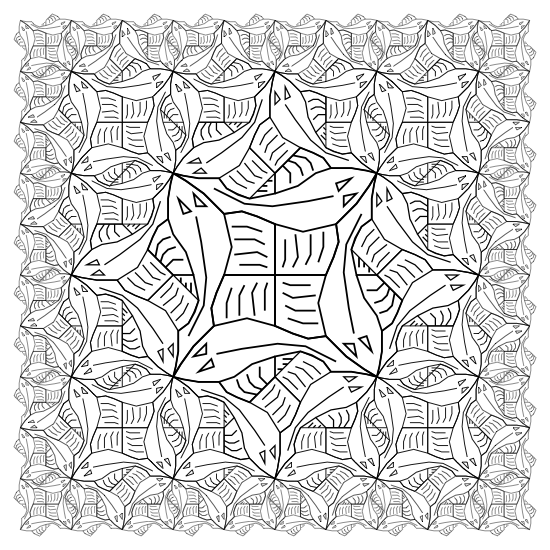

Posted by Lucas on May 07, 2010
amazing, escher in code!
Posted by Josh Caswell on May 17, 2010
Looks great! Thanks for sharing.
Posted by Tom De Smedt on Oct 04, 2010
That's wonderful!
amazing, escher in code!
Looks great! Thanks for sharing.
That's wonderful!

squarelimit
Posted by Karsten Wolf on May 03, 2010
This is a re-post. The first one didn't show up.
Something I did some years ago when starting with python/nodebox. Inspired by the "Functional Geometry" paper by Peter Henderson but not implemented in that style.
How to use?
Simply run it in Nodebox.
Things you can change:
Vary the depth parameter
The actual call to draw the picture is the second to last line: squarelimit(fishpicture, 3).
Use values from 0 to 12 for depth. Beware that a value of 8 burns 10 cpu minutes and some 600 MB RAM on my 1.5 GHz-G4.
Look at the definition of fishpicture and create your own.
There are some funny debug switches in the source.
Have fun and thanks to all the people who share their code here
-karsten